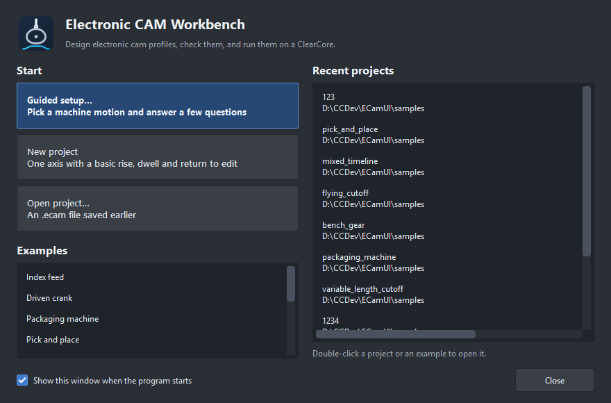
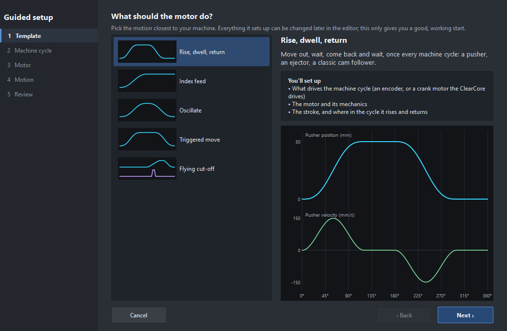
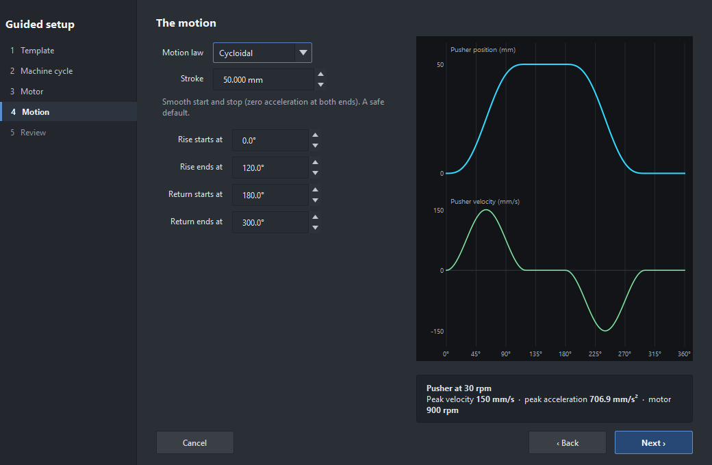
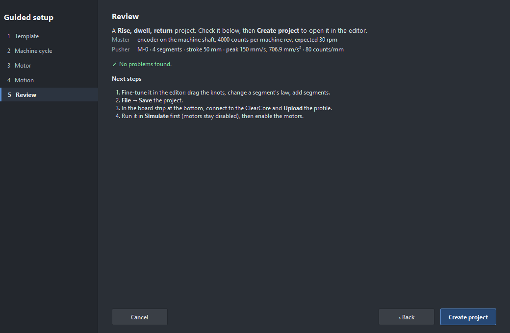

The Electronic CAM Workbench designs, checks and runs electronic cam profiles on a Teknic ClearCore. A follower motor moves as a function of a crank (an encoder on the machine, or a crank motor the ClearCore drives itself) or of a timeline (time from a trigger). You draw the motion, the app checks it (velocity jumps, motor speed, limits, cam pressure angle), and the ClearCore keeps it in flash and runs it from its 5 kHz sample interrupt, with nothing streamed while it runs.
Experimental. Not certified for production or safety-critical use. Keep a physical emergency stop in the circuit (the firmware can watch an input as one: A-9 unless you pick another).
After the splash screen the start page offers the ways in:

The start page: guided setup, a new project, an existing file, a bundled example or a recent project.
.ecam file saved earlier.Untick Show this window when the program starts to go straight to a new project; File › Start page… brings it back.
Guided setup (start page, or File › New from guided setup…, Ctrl+Shift+N) asks a few plain questions, one step at a time, and builds the project. Each step explains what it needs.

Step 1: pick the motion closest to your machine. The preview shows its shape.
| Template | Master | For |
|---|---|---|
| Rise, dwell, return | crank | a pusher, an ejector, a classic cam follower |
| Index feed | crank | a conveyor or roll feed that advances a fixed length each cycle |
| Oscillate | crank | continuous out and back: a traverse, a wrapping arm |
| Triggered move | timeline | out, hold and back once per input: pick and place, a gate |
| Flying cut-off | encoder on the line | a carriage that rides the material while a saw cuts |
Then the steps ask what times the cycle (an encoder, a crank motor, a trigger, or the line), the motor and its mechanics (one step per motor), and the motion itself, with a live preview and the peak velocity, acceleration and motor speed:

The motion step: stroke, where in the cycle it moves, and the motion law. The card below the preview shows the peaks.
The Review step lists the settings and any problems (two things on one motor connector, a velocity jump, a limit exceeded, a fast motor) and what to do next. Create project opens it in the editor, unsaved.

The Review step: the settings, any problems, and what to do next.
New to electronic cams? Read The window and Masters, then try a worked example.